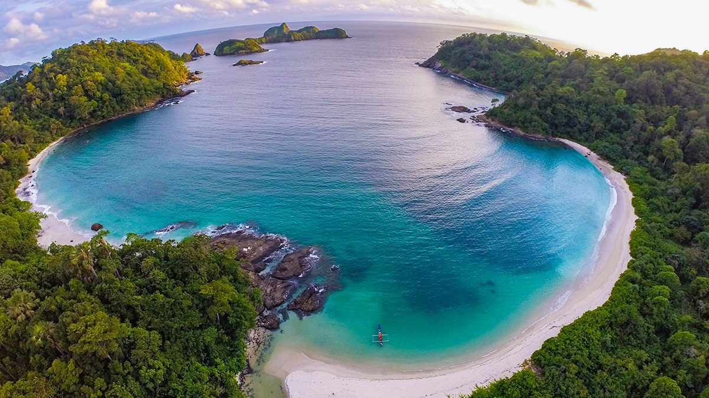

BANYUWANGI
Kabupaten Banyuwangi adalah sebuah wilayah kabupaten di provinsi Jawa Timur, Indonesia yang merupakan kabupaten terluas di Jawa Timur dan juga kabupaten terluas ketiga di Pulau Jawa. Sejarah berdirinya Banyuwangi tidak bisa dilepaskan dari sejarah kerajaan Blambangan, karena Blambangan merupakan cikal bakal dari Banyuwangi. Blambangan adalah kerajaan yang semasa dengan kerajaan Majapahit bahkan dua abad lebih panjang umurnya. Blambangan adalah kerajaan yang paling gigih bertahan terhadap serangan VOC serta Blambanganlah kerajaan yang paling akhir ditaklukkan penjajah Belanda di Pulau Jawa.
Budaya dan Kesenian
Kabupaten Banyuwangi merupakan wilayah lintas pulau antara Pulau Jawa dan Pulau Bali, sehingga menjadi salah satu tempat pertemuan berbagai jenis kebudayaan. Budaya masyarakat Banyuwangi sangat beragam dan meliputi budaya lokal dari suku Jawa, suku Bali, suku Madura, dan suku Melayu. Diantara sekian banyaknya budaya di Banyuwangi, ada beberapa yang cukup dikenal oleh masyarakat luas bahkan oleh penduduk luar Banyuwangi itu sendiri, seperti Batik gajah olingnya atau tari gandrungnya.
Tari Gandrung
Jaranan Buto
Tari Seblang
Destinasi Wisata
Banyuwangi merupakan salah satu kabupaten di provinsi Jawa Timur yang cukup terkenal dengan pesona wisatanya. Salah satu tempat yang paling terkenal adalah kawah ijen. Kawah ijen merupakan kawah terbesar di Pulau Jawa dengan luas mencapai 20 km. Ada juga pesona alam berupa pantai dan air terjun yang tak kalah indahnya.
Kawah Ijen
Wedi Ireng
Air Terjun Jagir
Makanan Khas
Selain destinasi wisatanya, Banyuwangi juga terkenal dengan kekayaan kulinernya. Karena kuliner kota Banyuwangi mempunyai keunikan tersendiri yang membedakannya dengan kuliner dari daerah lainnya.
Salah satu contoh kuliner khas Banyuwangi ialah Sego Tempong
Sego Tempong
adalah berupa nasi panas yang dihidangkan bersama sayur-sayuran rebus dilengkapi dengan sambal mentah super pedas yang disebut sambal tempong. Biasanya penjual sego tempong ini akan menyediakan aneka pilihan lauk sehingga pembeli bisa memilih sesuai dengan keinginannya. Beberapa pilihan lauk diantaranya, bakwan jagung, pepes ikan laut, ayam goreng, telur dadar, dan ikan asin. Sego tempong ini terkenal karena rasa segar dari sambal mentahnya.
Rujak Soto
Rujak Soto merupakan hasil perpaduan antara rujak sayur dan soto, biasanya yang digunakan adalah soto babat. Meski tak jarang dijumpai penjual yang menggunakan soto daging ataupun soto ayam.